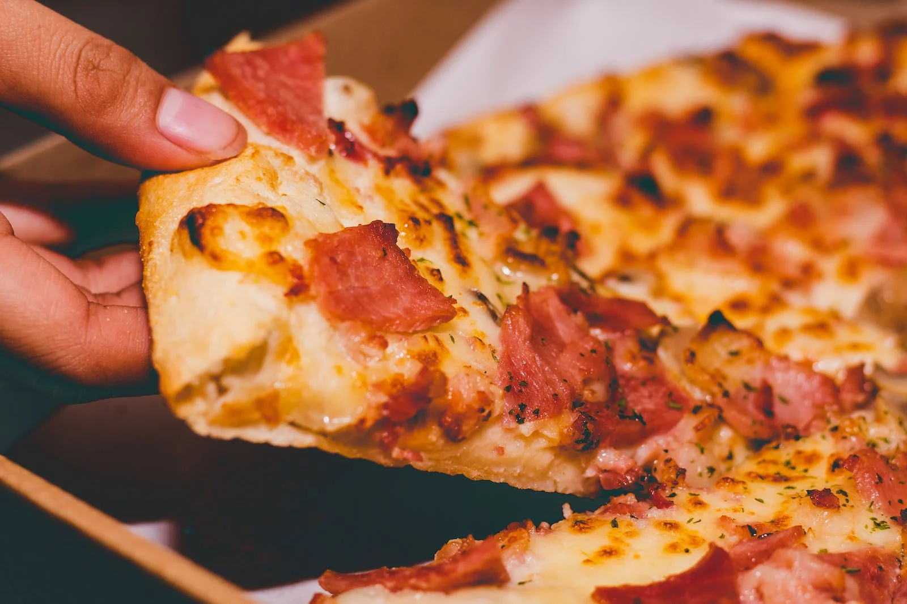

Pizza
Nothing beats a fresh-out-of-the-oven pizza, and once you see how easy it is to make for yourself, you'll never order delivery again. Switch up the toppings and add your favorites to make it your own. Pepperoni, mushrooms, bell peppers, pineapple? You can have it all! We can't get enough of Bacon Pickle Pizza, personally.
First things first, make your dough. You can read the easy step-by-step guide, here. Then, get topping. For the perfect margherita-style base, don't skip the following.
Start with the right sauce: When you're perusing the aisle for sauce, we say skip anything labeled "pizza sauce." Usually, that stuff ends up being too thick or cloyingly sweet (or both). Stick to marinara here, either homemade or store-bought.
Choose your cheese: The way to go here is fresh, thinly sliced mozzarella. Sometimes it comes packed in water, so be sure to dry it off before slicing to avoid a watery pizza! If you've only got pre-shredded mozz on hand, that'll work in a pinch.
Nail the temp: Our pizza cooks at the very high temp of 500°. We're essentially trying to recreate a pizza oven, which can reach 1,000°, in a more realistic, at-home way. Because the dough is so thin, you really just want to crisp up the outside and keep it soft and chewy on the inside, versus baking it all the way through until it's cracker crisp. High temp is perfect for this. If your oven goes higher, feel free to crank the heat, just keep an eye on it!
Transfer, then top: Before you get started, stretch your dough and transfer it to a well-oiled baking sheet. We also love adding a thin layer of cornmeal for an extra-crunchy crust, but feel free to skip if you're not into that. Word to the wise: add your toppings only once your dough has been transferred to the baking sheet (or pizza stone). If you top it and then try to move it, things tend to get messy and extremely frustrating.
Finishing touches: After your pizza is baked, add another drizzle of extra-virgin olive oil, torn fresh basil, and red pepper flakes. These things are much more pungent and delicious when fresh.